Аккредитованная метрологическая служба (аттестат № RA.RU.314074). Поверяем счётчики воды и тепла на месте, без демонтажа, с записью в реестр ФГИС «Аршин» — УК примет документы без вопросов. Замена и установка счётчиков.
Эталонная установка, прогон воды, акт проведения поверки. Счётчик остаётся на месте, демонтаж не нужен.
от 400 ₽/приборСчётчик + монтаж + опломбировка + документы для УК. Новый межповерочный интервал с первого дня.
от 1 000 ₽Монтаж нового прибора учёта с оформлением ввода в эксплуатацию для УК и агрегаты для Мосводоканала.
от 1 200 ₽Поверка теплосчётчиков и узлов учёта для ТСЖ, управляющих компаний и котельных.
от 3 500 ₽Работаем со всеми популярными счётчиками — полный список ниже.
от 600 ₽
ХВС или ГВС, 20–30 минут, без демонтажа
от 500 ₽ /прибор
ХВС + ГВС вместе — от 1 000 ₽ за оба
от 400 ₽ /прибор
10+ приборов: дом, подъезд, ТСЖ, УК
| Услуга | Цена | Примечание |
|---|---|---|
| Поверка счётчика воды | от 600 ₽/прибор | 20–30 минут, без демонтажа |
| Поверка двух (ХВС + ГВС) | от 500 ₽/прибор | стандартная квартира, от 1 000 ₽ за оба |
| Коллективная заявка | от 400 ₽/прибор | от 10 приборов |
| Замена счётчика | от 1 000 ₽ | счётчик + монтаж + пломба |
| Установка счётчика | от 1 200 ₽ | ввод в эксплуатацию, документы для УК |
| Счётчики тепла | от 3 500 ₽ | МКД, ТСЖ, котельные |
Цена, названная по телефону, не меняется на месте. Выезд по Москве — бесплатный. Результат поверки вносим в ФГИС «Аршин». Даём скидки льготникам.
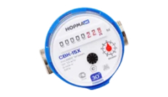
Норма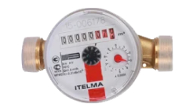
Itelma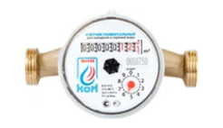
ЭКО НОМ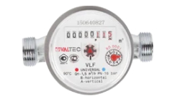
Valtec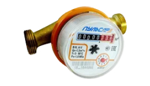
Пульсар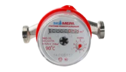
Экомера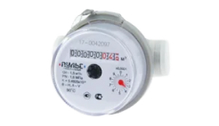
Пульс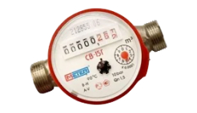
Метер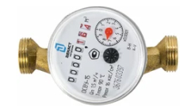
Decast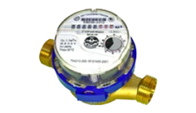
Тепловодомер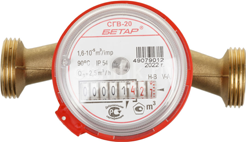
Бетар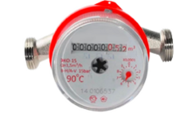
ЛюбойСчётчики холодной воды поверяются раз в 6 лет. Счётчики горячей воды, выпущенные до середины 2010-х годов, — раз в 4 года. Точный срок указан в паспорте прибора и в квитанции УК. Не ждите последнего дня: подать документы нужно за 3 месяца до окончания срока, после 90 дней просрочки плата переходит на норматив с повышающим коэффициентом.
По ФЗ № 102 поверку средств измерений выполняют организации, аккредитованные в Росаккредитации. УК и расчётные центры принимают документы только таких служб, а доступ к госреестру «Аршин» есть только у организации с аттестатом. У нас он есть — № RA.RU.314074, проверяется на портале Росаккредитации.
Мастер приезжает с переносной эталонной установкой и работает в 4 этапа: внешний осмотр счётчика и пломб, проверка герметичности, прогон воды и сверка показаний прибора с эталоном. Демонтаж не нужен. При неисправности оформляется протокол и предлагается замена счётчика.
По закону просроченный счётчик считается непригодным, его показания не учитывают. УК переводит плату на норматив с повышающим коэффициентом — вместо 700–1 000 ₽ в месяц по счётчику приходит 3 000–7 000 ₽. Одна поверка закрывает проблему на 6 лет.
Мы вносим результат в ФГИС «Аршин» и сообщаем номер записи. Вам остаётся подать сведения в свою УК или ЕИРЦ (в Москве также через mos.ru, «Мосводоканал», Госуслуги, ГИС ЖКХ, МФЦ). Часто достаточно номера записи в «Аршине».